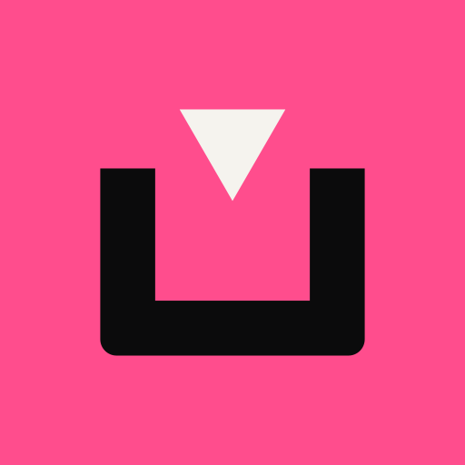
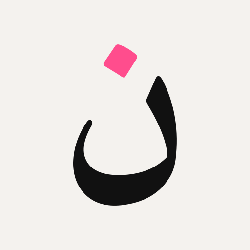
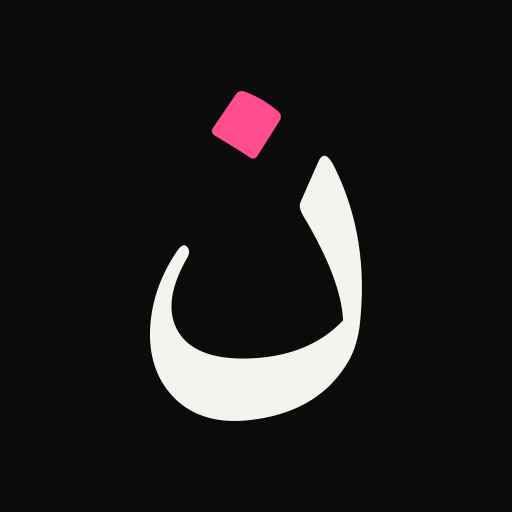
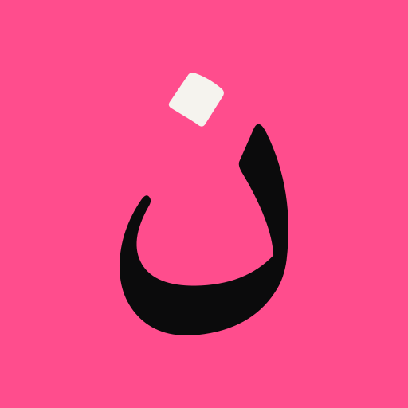
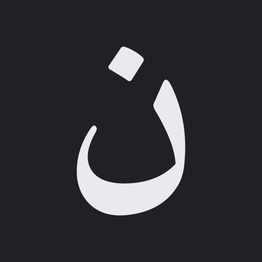
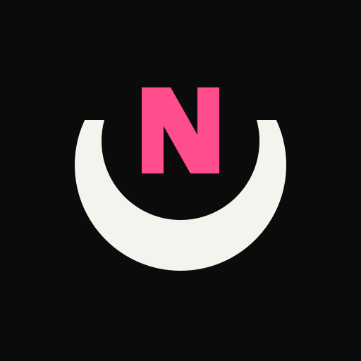
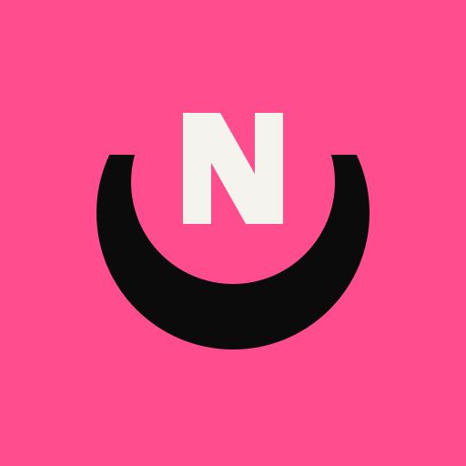
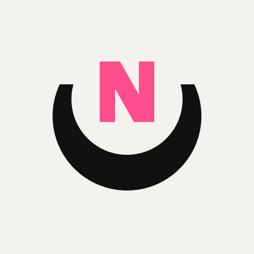

6Noon drop
The letter ن, drawn as what it looks like: a dot landing in a bowl.
The first letter of the name in Arabic. Its shape is a dot above a bowl.
The letter ن, drawn as what it looks like: a dot landing in a bowl.

ن squared off. It is already a download sign.

ن as a calligrapher writes it in Naskh, with the dot in colour.




The dot of ن is the N. Both alphabets in one letter.



The mark that turns نزل (it came down) into نزّل (bring it down).